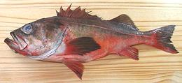
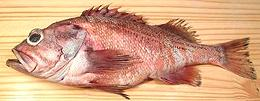

Rockfish / Scorpionfish Family
[Rockfish, family Scorpaenidae, family Sebastidae]
Some biologists lump all these fish under Scorpaenidae
(Scorpionfishes) and some assign a number of genera to Sebastidae,
a family not recognized at all by the first group. They are mostly
venomous (poisoned spines) ranging from extremely to not much.
Fortunately those off the Pacific coast of California fall in the "not
much" range.
Popularly, rockfish are called names like "Sculpin" and "Rock Cod" but
none are members of those families. They are popular eating fish ranging
from the Aleutian Islands of Alaska to the tip of Baja California,
Mexico, though each species has a more limited range.
More on Varieties of Fish
(very large page).
Acadian Redfish
[Sebastes fasciatus]
This fish is native to shallow waters in the North Atlantic. It is
most common from Maine, USA north around Nova Scotia, but lesser
populations are found as far south as Virginia, and off southern Greenland
and around Iceland. It grows to about 12 inches long, and was not
previously considered a prime commercial catch. There is now some effort
to market it, as the Cod and Haddock fisheries decline. It is IUCN Red
Listed EN (Endangered). It was seriously overfished, but with regulation
in place, stocks have largely recovered.
Photo by U.S. Government = Public Domain.
Bococcio Rockfish
[Sebastes paucispinis]
This rockfish is found from along the Aleutian Islands of Alaska down to
at least the Mexican border. It can grow to nearly 36 inches and 21 pounds,
but the photo specimen was 21 inches and 4 pounds, a little larger than
average market size. This is a prized eating fish but it's IUCN Red Listed
as CE (Critically Endangered) and the catch is restricted in California.
Commercially Bococcio fillets are often mixed in with fillets of other
rockfish.
Details and Cooking.
Mexican Rockfish
]

[Sebastes macdonaldi
This rockfish is found from Santa Barbara, California, down to the tip
of Baja California, Mexico, and in the Gulf of Mexico. It can grow to
26 inches and 6 pounds, but the photo specimen was 17 inches and 1
pound 14-3/4 ounces. This excellent eating fish and popular game
fish is IUCN Red listed NE (Not Evaluated) and not considered
endangered.
Details and Cooking.
California Scorpionfish
[Sculpin, Scorpaena guttata]
Commonly called "Sculpin" (which it is not), this fish is found from the
central coast of California to the central cost of Baja California and
the northern half of the Gulf of California, a rather short range as fish
go. It can grow to 17 inches but the photo specimen was 14 inches and
weighed just under 2 pounds 2 ounces.
Details and Cooking.
Canary Rockfish
[Orange Rockfish, Rockcod, Sebastes pinniger]
One of the many varieties of deep water rockfish caught all along the
Pacific coast, Canary Rockfish is found from Baja California to the
Gulf of Alaska. They can grow to 29 inches and 10 pounds, but the photo
specimen was 23 inches and 5 pounds 12-1/8 ounces. This fish is
sometimes more orange than the one in the photo, and sometimes more
yellow.
Details and Cooking.
Idiot Fish
[Shortspine Thornyhead, Sebastolobus alascanus]
A variety of Scorpion Fish particularly
adapted to the deep "oxygen minimum" layer of the ocean where most fish can
not thrive. It has a huge head, both long and wide, housing very large gills.
It lives in the North Pacific, some as far south as the Mexican border
but mostly Northern California, Washington State, Canada and Russia, but as
far south as northern Japan. This fish can grow to 31 inches and 20 pounds
but the photo specimen was 21 inches and 4-3/4 pounds, towards the large
end of market size.
Living under very sub-optimal conditions the Idiot Fish grows slowly and
has a slow propagation rate. The U.S. fishery is tightly regulated under
Federal fisheries programs to avoid overfishing, consequently it's not found
far from the Pacific coast. Of course it's strange spiny appearance is sort
of off-putting for many people anyway, which is just as it should be because
there will be more for me. Outside the U.S. Pacific coast regulation may be
deficient and the IUCN Red List status is EN (Endangered).
Details and Cooking.
Ocean Perch
The fish in this subcategory are commonly called "Ocean Perch", but
this name is not valid, these fish are all Rockfish in family
Sebastidae and are not related to actual Perch. Strangely, the
Acadian Redfish, while closely related to the
Atlantic Ocean Perch and Beaked Redfish, and sharing part of their
range, is not called "Ocean Perch".
|
Ocean Perch - Pacific
[Longjaw Rockfish, Pacific Ocean Perch; Sebastes alutus]
This Pacific rockfish, easily recognized by the nubby protrusion on it's
lower lip (no, it isn't a cold sore) is found from the northern tip of
Japan all the way around and down to San Diego, California but is most
populous along the south coast and islands of Alaska and around the
Kamchatka Peninsula. This fish can live for about 100 years and can grow
to 21 inches and 4.6 pounds, but the photo specimen was 16-1/4 inches
and weighed 1 pounds 15 ounces.
This fish can occasionally be found in Asian fish markets in Southern
California. As with all rockfish it is wild caught and this fish is
currently considered overfished. IUCN Red List status is "Not Evaluated".
Details and Cooking.
Ocean Perch - Atlantic
 [Golden Redfish (fishbase); Rose Fish, Atlantic Redfish, Norway
Haddock, Red Perch, Red Bream, Hemdurgan; Sebastes norvegicus;
Sebastes marinus (in error)]
[Golden Redfish (fishbase); Rose Fish, Atlantic Redfish, Norway
Haddock, Red Perch, Red Bream, Hemdurgan; Sebastes norvegicus;
Sebastes marinus (in error)]
This deep water fish is native to the far north of the North Atlantic.
In the West Atlantic it ranges from Labrador, Canada, south to New
Jersey, USA, then around southern Greenland and Iceland. In the East
Atlantic, it ranges from Portugal north to Spitsbergen and
Novaya Zemlya. It can grow to 39 inches and 33 pounds, but is commonly
about 18 inches long. The main fishery region is between Iceland
and Greenland. It is IUCN Red Listed NE (Not Evaluated), but it is
considered severely overfished in that region, and it is uncertain
if stocks can recover. This fish is most commonly sold as frozen
fillets. There have been reports of ciguatera poisoning from this
fish.
Photo by Havforskningsinstituttet distributed
under license Creative Commons
Attribution-ShareAlike v4.0 International.
Beaked Redfish
[Ocean Perch, Deepwater Redfish, Atlantic Redfish, Norway Haddock,
Red Perch, Golden Redfish, Hemdurgan; Sebastes mentella]
This deep water fish is native to the far north of the North Atlantic,
from Baffin Bay, Canada, south to Nova Scotia, around southern Greenland
and Iceland, east to Norway and north to Spitsbergen. It can grow to
almost 23 inches long, and is fished mainly by Norway and Russia. IUCN
Red Listed LC (Least Concern), but stocks have been depleted to the
point Norway has banned taking this fish except as by-catch.
Photo by Dolores Garabana distributed under license
Creative Commons
Attribution-NonCommercial v3.0 Unported Attribution Required.
Red Gurnard Perch
[Ocean Perch, Jock Stewart, Red Rock Perch; Helicolenus
percoides syn. Sebastes percoides (invalid)]
This fish is native to the continental shelf along southeastern
Australia and around New Zealand. It can grow to 18-1/2 inches long
and 3 pounds. It is fished commercially and sold mostly locally. IUCN
Red Listed as NE (Not Evaluated). The head and dorsal fin spines on
this fish are venomous.
Photo by Ian Skipworth, contributed to the Public
Domain.
|
Redbanded Rockfish
[Red Bandit (Asian markets); Sebastes babcocki]
This Pacific rockfish is found from the northern tip of Japan all the way
around and down to San Diego, California but is most populous along the
south coast and islands of Alaska. It can grow to 25 inches and almost 10
pounds, but the photo specimen was 17 inches and 3 pounds. It is sold in
Asian groceries in Southern California labeled "Red Bandit". Colors may be
lighter than on the photo specimen. A slow growing fish of moderate
population, it's mainly an incidental catch and unlikely to be found in
markets far from the Pacific Coast.
Details and Cooking.
Rougheye Rockfish

[Blacktip Rockcod; Sebastes aleutianus]
This Pacific rockfish is found from the northern tip of Japan all the way
around and down to San Diego, California but is most populous along the
south coast and islands of Alaska and off the coast of Washington state.
It gets its name from a row of tiny spins found right under the eyes.
This fish can live for over 140 years and can grow to 38 inches and 19
pounds, but the photo specimen was 19 inches and 3 pounds 4 ounces. It
can occasionally be found in Asian groceries in Southern California. Fishing
regulations for rockfish are quite strict, limiting supply, so they are
unlikely to be found in markets far from the Pacific Coast.
Details and Cooking.
Speckled Rockfish
[Sebastes ovalis]
This rockfish is found in the east Pacific from San Francisco south to
northern Baja California, Mexican, but is rare north of Santa Barbara.
It can grow to nearly 22 inches and 2 pounds, but the photo specimen
12-1/2 inches and 14-3/4 ounces. This is a prized eating fish
and is IUCN Red Listed as NE (Not Evaluated), as with other rockfish,
the catch is regulated by the state of California. The photo specimen
was purchased from a large Asian market in Los Angeles, labeled
"Gother Cod", a misspelling of "Gopher Cod" (rockfish are often called
"rock cod"), but it wasn't a Gopher Rockfish either, though of similar
appearance.
Details and Cooking.
Silvergray Rockfish
[Sebastes brevispinis]
This rockfish is found from along the Aleutian Islands of Alaska down
to the tip of Baja California, Mexico, but is not common south of the
Canadian border. It can grow to 28 inches and a little over 10 pounds,
but the photo specimen, purchased from a large Asian market in
Los Angeles, was 14-3/4 inches and weighed 1 pound 3-1/4
ounces. This is considered a very fine eating fish IUCN Red Listed
as NE (Not Evaluated). As with all rockfish, the catch is regulated
in California and probably in the northern states as well. This fish
is often tossed in with other rockfish of similar color, and this fish
was mixed with Speckled Rockfish described above, but neither one was
"Gother cod" as labeled.
Details and Cooking.
Vermillion Rockfish
[Red Rock Cod, Sebastes miniatus]
This rockfish is found from mid British Columbia, Canada south to mid
Baja California, Mexico. It can grow to nearly 36 inches and 15 pounds,
but the photo specimen was 17-1/2 inches and 3-1/2 pounds, about normal
market size. It's a prized eating fish, but, as with other rockfish,
the fishery is tightly regulated so it is available mainly along
the Pacific coast of the U.S. and Canada.
Details and Cooking.
Yellowmouth Rockfish
 [Red Rock Cod; Sebastes reedi]
[Red Rock Cod; Sebastes reedi]
This Pacific rockfish is found all along the Aleutian Island chain down
to northern California, living in deep water over rough bottoms. It can
live to 100 years and can grow to 22 inches, but the photo specimen was
18-1/2 inches and 3 pounds 6 ounces. This fish is rather rare in the
Asian markets here in Southern California. Fishing regulations for
rockfish are quite strict, limiting supply, so they are unlikely to be
found in markets far from the Pacific Coast.
Details and Cooking.
sf_rockz* 2006 r 110625 - www.clovegarden.com
©Andrew Grygus - agryg@clovegarden.com - Photos
on this page not otherwise credited © cg1
- Linking to and non-commercial use of this page permitted